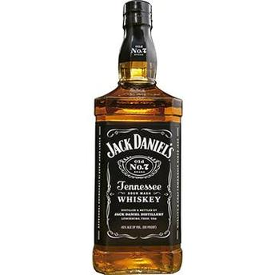

Ancora página 2
Whisky
A palavra whisky vem de uisge, que é uma forma abreviada de uisge beatha, gaélico para água da vida.
Antes do século XVIII os escritores o definiam como usquebaugh ou aqua vitae.
A produção de uísque na Escócia provém de várias tradições que foram introduzidas por São Patrício da Irlanda no século IV ac., e a destilação era feita por indígenas nas terras altas, segundo o relato que a história traz, mesmo que sejam eles muitos vagos.
Foram achados documentos sobre a destilação na Escócia que remontam ao século XV, nos Royal Exchequer Rolls (Registro do Tesouro Público) que datam de 1.494 e descrevem a venda de 500 Kg de malte para um Frade de nome John Corr para produzir a aqua vitae.
Ou seja que nos seus começos, sua produção estava ligada aos monastérios, que usavam o licor produzido com ervas e especiarias, para fins medicinais, por isso era conhecido pelo nome de aqua vitae. Em 1505 o Guild of Surgeon Barbers (Clube de Barbeiros e Cirurgiões) obteve o direito exclusivo da destilação em Edimburgo.
Pela Escócia estar cheia de lagos, enseadas, altas montanhas e sofrer chuva freqüente, o uso moderado de bebidas alcoólicas tem sido considerado refrescante e até certo ponto necessário.
Havia poucas destilarias profissionais nos séculos XVII e XVIII, e até 1.820 a destilação era uma atividade quase doméstica. Fabricavam a sua própria bebida na maioria das granjas rurais de terras altas em seu alambiques privados uisage beatha.
Era muito importante para a economia rural, já que desta maneira a cevada que sobrava após a destilação, era dada para o gado como alimento de muita importância. O uísque não era utilizado só para o consumo caseiro, também como uma moeda líquida de grande valor.
Era muito importante para uma sociedade de pessoas pobres das terras altas, onde o clima inclemente de um país do norte, era muito impiedoso.
A produção de uísque de malte era uma extensão do ano agrícola. A época começava em agosto ou setembro, quando haviam terminado a colheita de cevada e continuava durante o inverno até final de abril. Muitos trabalhadores das destilarias se dedicavam a cortar a turfa para a estação seguinte, mas parava a produção durante o verão, chamada a época silenciosa.
O whisky é feito só com os ingredientes escoceses mais elementares: - água e cevada (normalmente malteada com turfa). O amadurecimento depende muito do clima marítimo e norte. Inclusive o whisky é o sangue da Escócia, histórica, social e economicamente. O whisky e a liberdade andam juntos escreveu Robert Burns, o poeta nacional da Escócia.
É a bebida da chegada e da despedida, e muito mais entre os dois. Se celebram os nascimentos, os hóspedes da casa, com uma dose.

Mais uma âncora
Se você chegou aqui deu tudo certo! :)